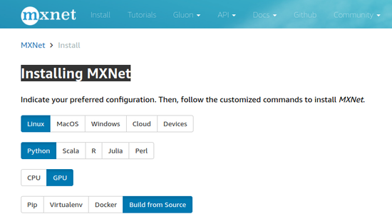
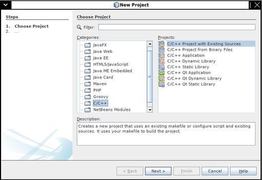
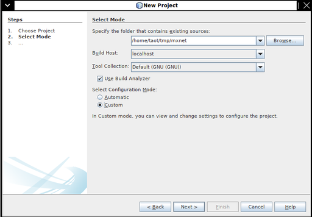
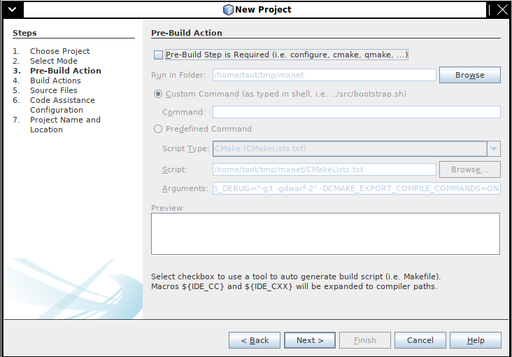
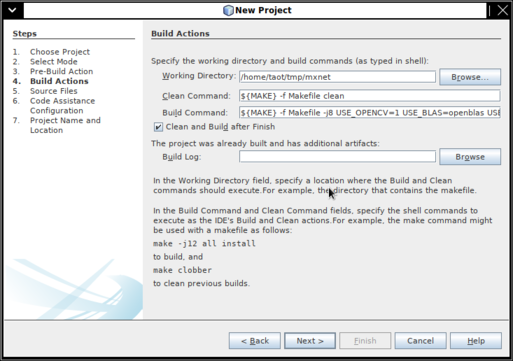
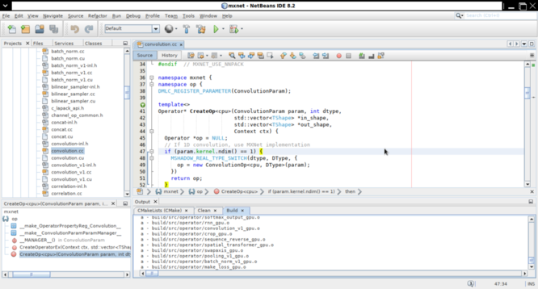

今天又试着在 Arch Linux 上 build MXNet，居然幸运地成功了，并且在 NetBeans 里导入了 MXNet 的项目。
Arch Linux 的安装，Nvidia 驱动，CUDA 和 cuDNN 的安装已经在上一篇博客中介绍了 (Deep Learning Environment with Arch Linux and PyTorch)，这篇就只针对如何 build MXNet 做一个记录。
安装期间基本按照 MXNet 官网的文档 Installing MXNet，有些问题参考了网上帖子和 Arch Linux 的 AUR。
注意在官方安装文档，选择合适的 configuration，我选择的是 Linux, Python, GPU, Build from Source

以下为 AUR 的 mxnet 的依赖，偷懒直接拿来放在这里了。
hdf5 (hdf5-openmpi-java, hdf5-openmpi)
openblas-lapack (openblas-lapack-git)
python-numpy (python-numpy-mkl, python-numpy-openblas)
python-requests
cuda (cuda65) (make)
cudnn (make)
cython (cython-kivy) (make)
git (git-git) (make)
opencv (opencv-cuda-git, opencv-git, opencv-gstreamer) (make)
cuda (cuda65) (optional) – GPU support
cudnn (optional) – GPU support
python-graphviz (optional)
最初按照官网安装文档，先装了 cblas, libopenblas 等，发现不行，后来在 AUR 中的 mxnet 包发现它依赖于 libopenblas-lapack，于是装上，结果可以 work。
我没有安装 python-numpy, cython, python-graphviz, python-requests (和 python 相关的依赖都在 anaconda 上安装的)。
另外，我用 pacman 安装了一个 graphviz，这个是 anaconda 里的 graphviz 需要的。
克隆 MXNet 源码：
git clone --recursive https://github.com/apache/incubator-mxnet.git mxnet --branch 0.12.0
之后需要修改 make/config.mk 文件，添加 ADD_CFLAGS（这个是在网上的一篇帖子上看到的，具体链接找不到了），否则编译会报错:
ADD_CFLAGS = -D_MWAITXINTRIN_H_INCLUDED -D__STRICT_ANSI__
编译：
make -j8 USE_OPENCV=1 USE_BLAS=openblas USE_CUDA=1 USE_CUDA_PATH=/opt/cuda USE_CUDNN=1
首先在 NetBeans 里新建 C/C++ 项目:

Select Mode 时，Configuration Mode 要选择 Custom，因为默认的会使用 CMake，而 MXNet 是直接用 Make 编译，并且没有使用 autoconf 生成 configuration:

Pre-Build Action 的 Check box 去掉勾选：

Build Actions 里在 Build Command 中把之前 make 的选项加上：

在我的机器上 4 核 8 线程编译，也花了 15 分钟。发现 NetBeans 的 C/C++ 项目的配置还是不错的，至少给你选项让你可以自定义编译的方式。

References: